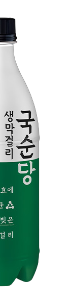
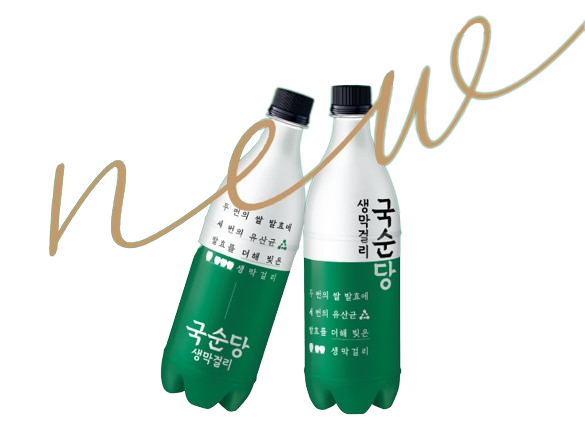
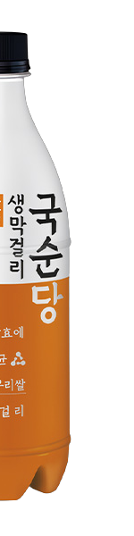
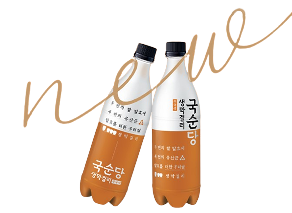
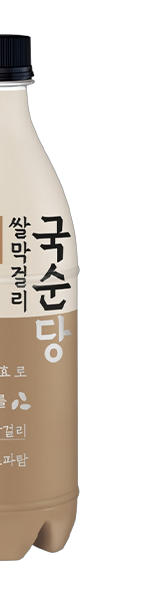
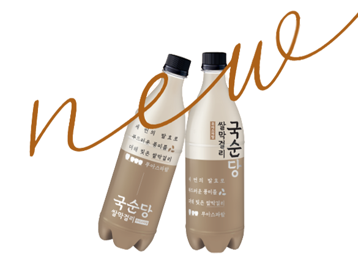

> 제품소개 > 국순당 막걸리
국순당 막걸리
국순당은 예전 우리 조상들이 즐겨 마셨던 막걸리를 계승, 발전시켜
최상의 원료 사용과 기술 개발에 노력하고 있습니다.
국순당 생막걸리
두 번의 쌀 발효에 세 번의 유산균 발효
- 유산균 발효로 신선한 맛을 더하다
- 유산균 발효 과정에서 생기는 기분 좋은 산미와 직접 키운 건강한 효모가 만들어내는 산뜻한 향미를 더해 신선한 막걸리의 맛을 살렸습니다.
- 두가지 발효로 건강함을 더하다
- 쌀 발효와 유산균 발효 과정에서 생기는 유산균 등의 성분을 풍부하게 담았습니다.
- 새로운 디자인으로 품질을 더하다
- 제품 전체를 감싸는 풀쉬링크 라벨을 적용하여 새로 빚은 막걸리의 맛을 신선하게 유지합니다.
- 용량
- 750ml
- 도수
- 6도
- 원료
- 백미(국내산) 100%
- 유지기한
- 10℃이하 냉장보관시 45일
국순당 생막걸리(우국생)
발효를 더한 우리쌀
- 유산균 발효로 신선한 맛을 더하다
- 유산균 발효 과정에서 생기는 기분 좋은 산미와 직접 키운 건강한 효모가 만들어내는 산뜻한 향미를 더해 신선한 막걸리의 맛을 살렸습니다.
- 두가지 발효로 건강함을 더하다
- 쌀 발효와 유산균 발효 과정에서 생기는 유산균 등의 성분을 풍부하게 담았습니다.
- 새로운 디자인으로 품질을 더하다
- 제품 전체를 감싸는 풀쉬링크 라벨을 적용하여 새로 빚은 막걸리의 맛을 신선하게 유지합니다.
- 용량
- 750ml
- 도수
- 6도
- 원료
- 백미(수입산) 100%
- 유지기한
- 10℃이하 냉장보관시 45일
국순당 쌀막걸리
부드럽고 깔끔한 맛, 국순당 쌀막걸리
- 세 번의 발효로 신선한 맛을 더하다
- 세 번의 발효로 부드러운 풍미를 더한 우리쌀 막걸리입니다.
- 우리의 것으로 건강함을 더하다
- 곱게 갈아낸 쌀, 직접 키운 누룩과 효모로 세 번 발효하여 부드러운 막걸리의 풍미를 살렸습니다.
- 순수한 재료로 품질을 더하다
- 아스파탐, 합성감미료 없이 빚어 처음부터 끝까지 기분 좋은 맛을 즐기실 수 있습니다.
- 용량
- 350ml, 750ml
- 도수
- 5.8도
- 원료
- 쌀(국내산/수입산) *2종 판매
- 유지기한
- 제조일로부터 1년

두 번의 쌀 발효에 세 번의 유산균 발효를 더해 빚은 생막걸리


두 번의 쌀 발효에 세 번의 유산균 발효를 더해 빚은 생막걸리


세 번의 발효로 부드러운 풍미를 더해 빚은 쌀막걸리
